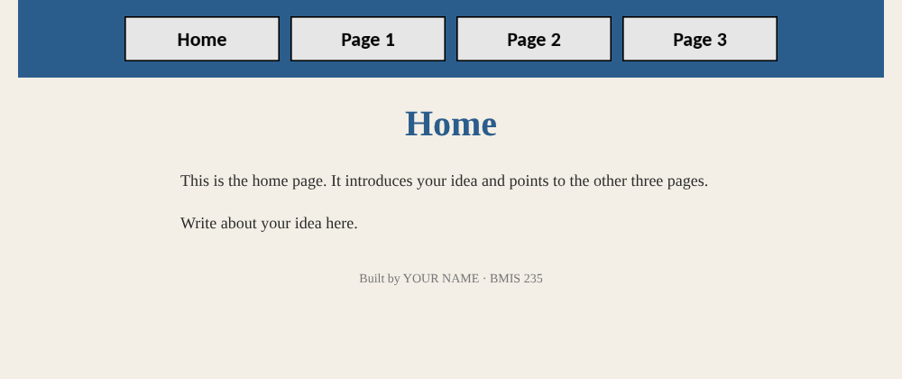
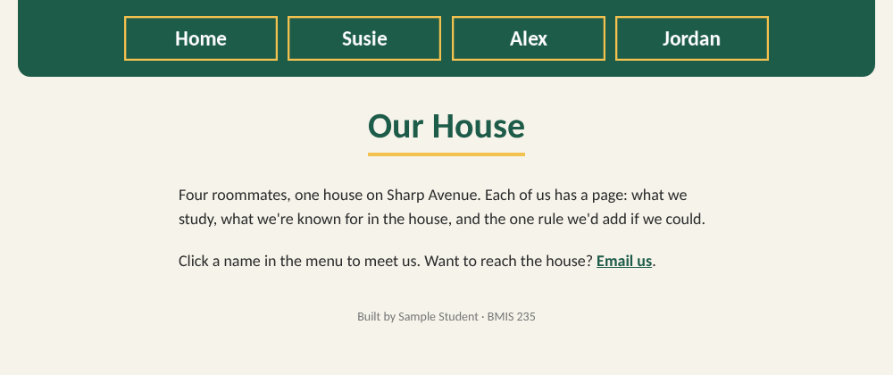

HTML-3
Links + CSS: Your Own Site
Turn a four-page template into your own site: your page names, your menu images, your brand, and one interactive graphic. The pages link to each other, and one stylesheet controls all of them.
Read this first
This page is long on purpose. Every step has two parts:
- What to do. The numbered steps.
- What's happening. The short gray note under the step. It tells you why the step works.
Read the gray notes. Almost every question students ask on this assignment is answered in one of them. If something breaks, come back here and reread the step before you search anywhere else.
Get this assignment
- Click the button, then Create a new repository.
Button shows a 404? This assignment hasn't been released yet.
- Repository name:
bmis235-html-3(exactly this). Set it to Public. - In your new repo, go to Settings → Pages. Under Build and deployment, choose Deploy from a branch, pick main and / (root), then click Save.
- After 1–2 minutes, open
https://YOUR-GITHUB-USERNAME.github.io/bmis235-html-3/. You'll see a four-page site with a blue menu of gray buttons.
Starter files in your repo:
index.htmlis your home page. Keep this name.page1.html,page2.html,page3.htmlare your three other pages. You'll rename them.styles.cssis your brand. One file that styles every page linked to it.img/holds the four menu images. You'll replace them with your own.
Seeing a 404 on your live link? Wait up to 5 minutes. Settings → Pages says Your site is live when it's ready.
Before and After


Notice what changed: the page names, the menu images, the colors and the font all match. That's one brand, set in two places: your Excel images and your styles.css.
Part 1 · Explore, then fix the plain page
- Open your live site and click every menu button.
- One page looks different from the other three. Which one, and how?
- Open that page's code and another page's code. Compare the
<head>sections line by line until you find what's missing. - Add the missing line to the plain page. Commit with a message like Connect page3 to styles.css.
What's happening: a page only uses styles.css if its <head> has this one line: <link rel="stylesheet" href="styles.css">. No line, no styles. The browser shows the bare HTML with its built-in defaults. The <head> holds instructions for the browser that you never see on the page; the <body> holds what you do see.
Part 2 · Plan on paper
- Pick an idea with a home page plus three parts. One page per roommate. One page per teammate. A home page plus three products. A trip with three stops.
- On paper, write the four menu labels (for example Home, Susie, Alex, Jordan).
- Next to each label, write its file name and its image name. Lowercase, no spaces:
Home → index.html → home.png Susie → susie.html → susie.png Alex → alex.html → alex.png Jordan → jordan.html → jordan.png - Pick your brand: one font, one main color, one accent color. Write them down too.
What's happening: every later step depends on these names matching exactly. Deciding them once, before you type, is the habit that saves the most time in this whole module. Notice the home page stays index.html: a web address with no file name at the end always loads index.html.
Part 3 · Make your menu images in Excel
Your menu is four buttons. Each button is a picture of a cell in Excel. This is the step that takes the most care, so read all of it before you start.
Build the cells
- Open a new, blank Excel workbook.
- Click cell B2 and type your first label (Home). Type the other three labels in B4, B6 and B8, leaving an empty row between each one.
- Make column B wide: Home → Format → Column Width, type 20.
- Make rows 2, 4, 6 and 8 tall: select them, then Home → Format → Row Height, type 40.
- Select all four label cells and set, all at once: your font, a font size around 16, bold, your font color and your fill color.
- With the four cells still selected, click Center and Middle Align (the Alignment group on the Home tab).
- Still selected, add a border: Borders → Thick Outside Borders (or All Borders). Pick the border color under Borders → Line Color first if you want one.
- Turn off the gray grid: View tab, uncheck Gridlines.
What's happening: your four images need to be the same size, or your menu looks crooked. The size of each image comes from the size of its cell, so every cell gets the same width and height. Setting the style on all four cells at once is the same idea as styles.css: one setting, applied everywhere, so nothing drifts. The empty rows keep the cells apart so you can capture one at a time. Gridlines off means no stray lines sneak into your pictures.
Capture each cell
- Set Excel's zoom to 100% (bottom right corner) and don't change it until all four are captured.
- Find out how to capture part of the screen on your computer. Search exactly that: how to screenshot part of the screen on Mac (or Windows). Learning to find this yourself is part of the assignment.
- Capture one cell by dragging from the outside corner of its border to the opposite outside corner. Include the whole border, nothing outside it.
- Save the capture as a .png with the image name from your plan:
home.png,susie.png, and so on. - Repeat for the other three cells.
What's happening: a screenshot is only as big as what's on screen. Change the zoom halfway and the next picture comes out bigger or smaller. Drag corner to corner on the border and every picture has the same edges. If one button still looks wider than the rest, recapture it; don't try to fix it in code.
Upload them
- In your repo, click the
imgfolder to open it. - Add file → Upload files, drag in your four images, and commit with a message like Add menu images.
- Optional: open each old starter image (
page1.pngand so on), click the … menu, and delete it. Commit.
What's happening: you opened img first so your images land inside it. If they end up in the main folder instead, the menu won't find them, because the menu looks for img/susie.png, meaning "go into img, then find susie.png." Uploading a file with the same name as one that's already there (like home.png) replaces the old one.
Part 4 · Rename your pages and rebuild the menu
Rename the files
- Open
page1.html, click the pencil, and change the file name in the box above the code to your name from Part 2 (susie.html). Commit. - Do the same for
page2.htmlandpage3.html. - Open your live site and click the menu. Some buttons now show a 404.
What's happening: the files have new names, but every menu still points to the old ones. A link is just an address. If nothing lives at that address anymore, you get a 404. That's expected. You'll fix it next.
Fix the menu on one page
Open index.html and find the <nav> block. Each line is one button:
<a href="page1.html"><img src="img/page1.png" alt="Page 1"></a>That line has three parts to change:
hrefis where the button goes. Change it to your page's file name:susie.html.srcis which picture shows. Change it to your image:img/susie.png.altis the words behind the picture. Change it to the label:Susie.
- Change all four lines of the menu on
index.html. Commit. - Wait a minute, open your live home page, and click every button. Every one must open the right page with the right picture.
- Not working? Fix
index.htmluntil it does. Don't move on with a broken menu.
What's happening: the <a> tag makes something clickable, and the <img> inside it is what you click. Any text or picture can be a link this way. A menu is nothing special; it's just links in a row. Names must match exactly, including capital letters: Susie.png and susie.png are two different files.
Copy the working menu everywhere
- On
index.html, select the whole menu, from<nav>through</nav>, and copy it. - Open each of your other three pages, select their old
<nav>block the same way, and paste over it. Commit each page. - Open your live site and click every button on every page.
What's happening: you build one menu, prove it works, and copy it. Now all four menus are identical, so if one works, they all work. Fixing four menus separately is four chances to make a typo. This is a system: get it right once, then repeat it exactly.
Part 5 · Your content
- On each page, change the
<title>, the<h1>heading and the paragraphs to fit your idea. Commit after each page. - Somewhere that makes sense, add one link to an outside website:
<a href="https://www.gonzaga.edu">Gonzaga</a>. Include thehttps://. - And add one email link:
<a href="mailto:you@zagmail.gonzaga.edu">Email me</a>. Commit. - On your home page, leave the empty
<div class="showcase">where it is. You'll fill it in Part 7.
What's happening: you now have three kinds of links. Your menu links use just a file name, so the browser looks in your own folder. The outside link uses a full address that starts with https://, so it leaves your site. The email link uses mailto:, so it opens an email instead of a page. Same tag, different address.
Part 6 · Your brand in styles.css
- Open
styles.css. Change the font and colors to match the brand you chose in Part 2 and used in your Excel images. - Add 3 new styles of your own. Commit each one separately with a message that says what it does, for example Rounded corners on the menu.
- Open your live site and click through all four pages.
What's happening: you changed one file and every page changed with it. That's the whole point of an external stylesheet. It's a brand guide the browser actually follows: define it once, and every page that links to it stays consistent. If a rule seems to be ignored, check whether a page has its own style="..." or <style> block. Those sit closer to the tag, so they win.
Style ideas: a different font, link hover colors, a new background color, heading sizes, spacing around paragraphs, rounded corners on the menu (border-radius). W3Schools CSS has examples for each.
Part 7 · Bring in an interactive graphic
Your site is done by hand. Now you'll add one piece you didn't hand-code: an interactive graphic, built by an AI tool and pasted into the empty box on your home page.
Pick your graphic
Pick something that fits your idea. A few examples:
- Your roommates' names bouncing around, and clicking one shows a fun fact.
- A simple map of your trip, and clicking each stop shows what you did there.
- A countdown to a date that matters to your site.
- Cards that flip over when you click them.
Ask for it
- Open Claude (claude.ai) or ChatGPT.
- Copy the prompt below. Fill in every part in [brackets] with your own idea, font and colors from
styles.css. Don't skip the rules.
Build an interactive graphic for my website's home page.
My site is about: [YOUR IDEA, e.g. four roommates who share a house]
The graphic should: [WHAT IT DOES, e.g. show our names bouncing around;
clicking a name shows a fun fact about that person]
Use my brand: font [YOUR FONT], main color [#YOUR COLOR],
accent color [#YOUR ACCENT].
Rules:
- Give me ONE block of code that I paste inside an existing
<div class="showcase"></div> on my page.
- Plain HTML, CSS and JavaScript only. No libraries, no frameworks,
no imports, no links to outside files.
- Put the CSS in a <style> tag and the JavaScript in a <script> tag,
both inside that one block.
- Start every CSS rule with .showcase so it can't change the rest of my page.
- Don't style body, html, h1, p, nav or footer.
- Keep it under 500px tall, and make it fit on a phone screen.
- Put a short comment above the HTML, CSS and JavaScript parts saying
what each part does.What's happening: the prompt is a specification. Every rule is there because your page already has a structure, and the graphic has to fit inside it. "One block" means it fits in one box. "No libraries" means it runs on GitHub Pages with nothing to install. "Start every rule with .showcase" uses the cascade from Part 6: the graphic's styles only reach things inside its box, so they can't overwrite your brand.
Paste it in
- Read what the AI gave you before you paste it. Find its three comments, and check that every CSS rule starts with
.showcase. - Copy the whole block.
- Open
index.html, click the pencil, and find<div class="showcase"></div>. - Click between
>and</div>, press Enter, and paste. The block must end up between the opening and closing tags of that box. - Commit with a message like Add interactive graphic. Wait a minute, then open your live home page and try it.
What's happening: the sites that look the most advanced are still pages like yours, with boxes holding pieces like this one. You already know where every part goes: the box is in the <body>, the menu and brand stay as you built them, and the graphic only lives inside its div.
If it doesn't work
- Your whole page changed fonts or colors. The AI broke the
.showcaserule. Tell it which rule it broke and ask again. - Nothing shows up. Check that you pasted between the box's tags, not after
</div>. Then check for words like import, React or asrc="https://…"link. Those break the "no libraries" rule. - It shows up but doesn't do anything. Copy the problem as one sentence ("I expected ___, but I see ___") and paste it back to the AI with the code.
Want to keep hand-coding instead? You can also build the graphic yourself, or both. Either way, it has to live inside the showcase box.
Commit as you go
- Commit after every step that works. Each commit is a saved version you can go back to.
- Write messages that say what changed: Rename page1 to susie, not Update page1.html.
- Your 3 styles must be 3 separate commits. That's how your work is graded.
Make it yours
- Fill in the author comment at the top of every file with your name and GU username.
- Fill in
<meta name="author">with your name. - Fill in the footer: Built by YOUR NAME · BMIS 235.
- Fill in
README.mdwith your name and your live link.
When you're stuck
- Say it in one sentence: "I expected ___, but I see ___."
- Pick one problem. Ignore the rest for now.
- Reread the step. Especially the gray note.
- Find the line. Which tag or file is it in?
- Search your one sentence (W3Schools, Google, YouTube).
- Change one thing, commit, check. Didn't work? Undo it and try the next idea.
The usual suspects
- A page looks plain. Its
<link>line is missing or misspelled. - A button shows a 404. Its
hrefdoesn't match the file name exactly. - A button shows a broken-image icon or its alt text. Its
srcdoesn't match the image name exactly, or the image isn't insideimg. - Buttons are different widths. Your Excel cells or captures are different sizes. Recapture.
- Menu works on one page but not another. That page has an old copy of the menu. Paste the working one again.
- You changed something but the site didn't. Wait 1–2 minutes, then hard refresh (search hard refresh for your browser).
"Nothing works" can't be searched. "My menu button shows a broken image" can.
Submit
- Wait 1–2 minutes after your last commit.
- Open your live link and click every menu button on every page:
https://YOUR-GITHUB-USERNAME.github.io/bmis235-html-3/ - Paste that link into Canvas. In the Canvas text box, list the 3 styles you added.
Rubric
| Criteria | Pts |
|---|---|
Plain page connected to styles.css | 1 |
| Four menu images made in Excel: same size, your brand, named after their pages | 2 |
| Three pages renamed; the same working menu on all four pages | 2 |
| Your own idea on all four pages (titles, headings, content), with one outside link and one email link | 1 |
Brand in styles.css: 3 new styles, each its own commit (listed in Canvas) | 2 |
Interactive graphic working inside the showcase box, without changing the rest of the page | 1 |
| Working GitHub Pages link | 1 |
| Total | 10 |